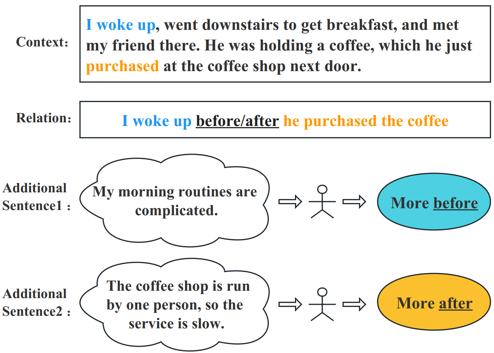
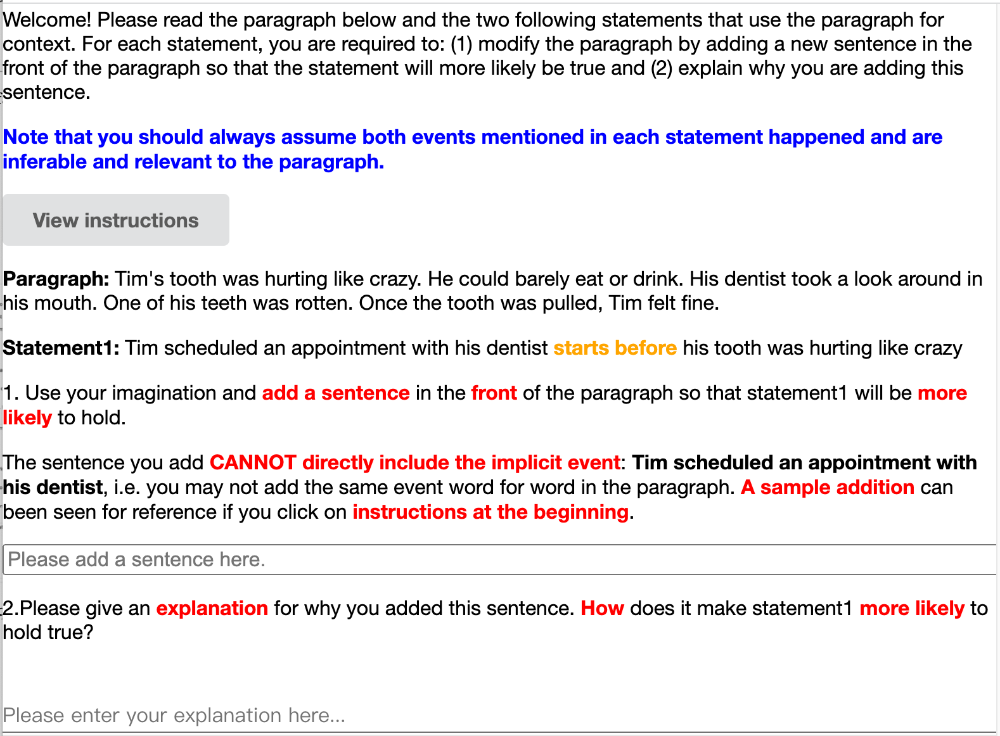
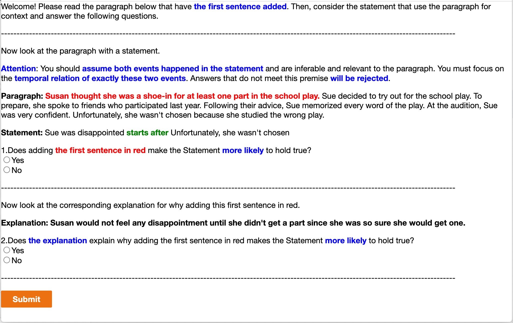

ACL’23
Generic Temporal Reasoning with Differential Analysis and Explanation
Abstract
Temporal reasoning is the task of predicting temporal relations of event pairs. While temporal reasoning models can perform reasonably well on in-domain benchmarks, we have little idea of these systems’ generalizability due to existing datasets’ limitations. In this work, we introduce a novel task named Today that bridges this gap with temporal differential analysis, which as the name suggests, evaluates whether systems can correctly understand the effect of incremental changes. Specifically, Today introduces slight contextual changes for given event pairs, and systems are asked to tell how this subtle contextual change would affect relevant temporal relation distributions. To facilitate learning, Today also annotates human explanations. We show that existing models, including GPT-3.5, drop to random guessing on Today, suggesting that they heavily rely on spurious information rather than proper reasoning for temporal predictions. On the other hand, we show that Today’s supervision style and explanation annotations can be used in joint learning, encouraging models to use more appropriate signals during training and thus outperform across several benchmarks. Today can also be used to train models to solicit incidental supervision from noisy sources such as GPT-3.5, thus moving us more toward the goal of generic temporal reasoning systems.
1 Introduction

Temporal relation extraction Pustejovsky et al. (2003); Chambers et al. (2014) is traditionally viewed as an information extraction task, where a model uses explicit temporal signals such as “happened before” to identify the temporal order of events. While these models have contributed to many downstream pipelines, they are not enough for more complicated tasks such as timeline generation, where most event pairs do not come with explicit signals. These implicit temporal relation extractions Zhou et al. (2021) thus require temporal reasoning, which relies on both common sense and semantic understanding of the context. In recent works, a popular approach to address these predictions is to finetune pre-trained language models (PLMs) with annotated supervision data. Unfortunately, existing temporal benchmarks Pustejovsky et al. (2003); Cassidy et al. (2014); Ning et al. (2018a) only annotate hard labels and ignore the fact that temporal labels can often be soft and nondeterministic. This approach allows models to exploit spurious signals and annotation artifacts easily for performance. For example, a model may learn to predict “lunch” before “dinner” regardless of the surrounding context, yet most existing benchmarks will not challenge such beliefs because most “lunch” annotations will happen to be before “dinner.” This is not always the case though, e.g. if the “lunch” and “dinner” were today’s lunch and yesterday’s dinner, and we know that yesterday’s dinner must happen before today’s lunch. This means that the current high performances of existing models may be misleading, and the community may actually possess an inaccurate perception of the models’ capacity to generalize.
In this work111Dataset and code are available at: http://cogcomp.org/page/publication_view/1008, we bridge this evaluation gap with a novel benchmark that evaluates whether a temporal reasoning model is making the correct predictions for the right reasons by properly identifying potential alternatives (e.g., “dinner” can be before “lunch” under certain contexts). Our intuition is that a model with good temporal generalizability should be able to understand the effect of subtle context changes and explain how the change will shift the temporal relation distribution of an event pair. To evaluate this, we propose the framework called temporal differential analysis. Under this setting, we select event pairs where the temporal relation is not 100% deterministic based on the context, meaning that both before/after relations are possible if additional information in regard to the context is given. Then, we annotate a hypothetical change in the form of an additional sentence added to the beginning of the context. As Fig. 1 shows, this context change will shift the event pair’s temporal relation distribution, making it either “more before” or “more after”. Each hypothetical change is also annotated with human explanations of why the change affects the temporal relation. We collect 2,241 such instances with a rigorous human annotation pipeline and call the resulting dataset Today (temporal differential analysis).
We find that models that achieve relatively high in-domain test performances are brittle and demonstrate minimal capabilities for differentiating subtle context changes that affect temporal relations. For example, the PatternTime model Zhou et al. (2021) that achieves 77% binary accuracy on Tracie Zhou et al. (2021) drops dramatically to 54% on Today, which is barely above random guessing. To mitigate this gap, we propose a general joint-learning technique that uses temporal explanations that Today annotates. Specifically, we argue that explanations of temporal relations are an excellent proxy for understanding temporal reasoning. We show models trained with Today’s task formulation and explanation annotation are better at perceiving cross-dataset supervision and achieve superior performances on multiple datasets with a single model.
We also find that while large language models (LLMs) are not good enough for temporal differential analysis, they do sometimes produce reasonable explanations for a given temporal relation. We design a pipeline that automatically collects supervision signals based on this finding. The pipeline starts with giving GPT-3.5 Ouyang et al. (2022) both an instance from Today and a hypothetical temporal relation, and then uses GPT-3.5 to generate several explanations. Finally, we train an explanation verifier based on Today’s human annotations, which selects the generated explanations that are more likely to be plausible. We show that adding such explanations from GPT-3.5 further boosts the performance across our benchmarks.
Our contributions are threefold: 1) We design a novel evaluation framework and collect a new dataset Today that uses differential analysis to test whether systems can perform temporal reasoning with the right reasons; 2) We show that Today’s supervision, especially the use of explanations, contributes toward a generic temporal reasoning model; 3) We use LLMs to generate pseudo explanations and filter these with a novel explanation verification system to show that such incidental supervision signals are helpful.
2 Related Work
Temporal Reasoning Models. Significant effort has been devoted to temporal reasoning, a challenging task that requires models to recognize not only the connection between event mentions but also their contexts. Several statistical learning models Mani et al. (2007); Ning et al. (2017, 2018b) have been proposed to characterize events based on features and learn to predict the temporal relations. Recently, data-driven temporal reasoning approaches Trong et al. (2022); Wang et al. (2022); Liu et al. (2021); Mathur et al. (2021); Zhou et al. (2020); Han et al. (2019) have witnessed great improvement over these feature-based models on benchmarks and are generally built upon deep neural models to predict temporal labels in an end-to-end fashion. Nevertheless, the lack of interpretability has made these neural models untrustworthy to be deployed in real-world applications Yin et al. (2022), especially in critical areas such as healthcare, finance, and government. The differential analysis approach to temporal reasoning first introduced in this paper provides a new paradigm for evaluating the interpretability and generalizability of temporal reasoning models.
Temporal Relation Datasets. From different perspectives, multiple research projects have focused on constructing temporal reasoning benchmarks. A series of seminal datasets, TimeBank Pustejovsky et al. (2003), TempEval 1-3 Verhagen et al. (2007, 2010); UzZaman et al. (2013), Matres Ning et al. (2018a) and so forth, have annotated on newswire articles for events and temporal relations between events. Torque Ning et al. (2020) examines models’ capability in temporal reasoning in reading comprehension. Tracie Zhou et al. (2021) introduces a novel dataset that evaluates the degree to which systems understand implicit events. However, none of these datasets annotate reasons to encourage generic temporal reasoning.
Explanations. The community has been studying explanations and how they can help reasoning tasks such as question answering. Several models have been proposed Rajani et al. (2019); Latcinnik and Berant (2020); Kumar and Talukdar (2020); Zhou et al. (2022), as well as evaluation benchmarks that aim to test if existing systems can properly utilize explanations Camburu et al. (2018); Aggarwal et al. (2021). Our work is closely related to this line of effort as we attempt to build a proxy benchmark that can be automatically evaluated for temporal explanations. Recent findings on large language models have also inspired several works to use them as explanation generators Wiegreffe et al. (2022); Marasović et al. (2022).
3 Dataset
In this section, we introduce the evaluation framework and collection process of Today.
3.1 Task overview
The Today dataset and its overall framework are designed to evaluate systems’ ability to make temporal predictions with plausible reasons. Existing datasets, including Matres, Torque, and Tracie, only annotate common event pairs that align with human common sense. In other words, if an event pair does not strongly imply a temporal relation (e.g. over 80% confidence), it will not be annotated and tested on systems. This allows pre-trained language models with millions of parameters to exploit annotation artifacts and priors that do not necessarily hold in certain contexts. For example, we know “lunch” is usually before “dinner”, but this also depends on if they are performed by the same subject, at the same location, and/or on the same day. Unfortunately, current models often memorize such relations as immutable facts, leading to prediction errors in instances that are less common in real life. This intuition inspires us to build a framework to evaluate how much spurious information and priors current models are using.
Temporal Explanations. An ideal method to evaluate whether models are making predictions in the right way is to let them explain why a certain prediction is made and evaluate the faithfulness and plausibility of the explanations. However, such an evaluation framework is almost impossible to achieve with current progress in natural language processing, where the two main challenges are: 1) it is extremely difficult to collect gold explanations that are sufficient to cover any possible sets of explanations; and 2) it is impossible to evaluate system generations using existing summarization metrics automatically.
Temporal Differential Analysis. Because of the aforementioned challenges in directly evaluating system explanations, we propose an alternative that is a close proxy to the ideal form, namely temporal differential analysis. The core of the temporal differential analysis is to check if models can correctly identify how a subtle change to the context may affect the temporal relations of a given event pair. The intuition behind this choice is two-fold: 1) it is much easier for both annotators and models to produce an explanation if they know which dimension to focus on; and 2) this provides a binary evaluation measure that is deterministic and trustworthy in terms of reflecting how much spurious information models are using.
Specifically, our differential analysis process is defined below. Given an original context , event 1 and event 2 , we assume a gold distribution on the temporal relation between and concerning , where are the probabilities of the temporal relation being before, after and simultaneous respectively, and the probabilities altogether sum to 1. We then annotate two additional sentences and , where the temporal relation distribution between and with respect to results in an increased , while similarly the distribution using as the context has a higher .
Table 1 shows an example instance of temporal differential analysis, where an additional sentence has an effect on the temporal relation between the two events and shifts the label distribution towards “before”. We conducted a human pilot study for this formulation and found that it is easier to annotate and achieve substantial improvement over the explanation quality than to directly ask annotators to provide custom explanations for an event pair. We therefore adopt the former formulation and create our evaluation dataset Today through a multi-stage annotation process as described below.
| Example |
| Context : Tim’s tooth was hurting like crazy. His dentist |
| took a look around in his mouth. One of his teeth was rotten. |
| Once the tooth was pulled, Tim felt fine. |
| Additional Sentence 1 (): Tim always met his |
| dentist regularly. |
| Event 1 (): Tim scheduled an appointment with his dentist. |
| Event 2 (): Tim’s tooth started to hurt like crazy. |
| Explanation (): Some people maintain regular visits to |
| a dentist. Tim is one of these individuals and may have |
| already scheduled a regular appointment with his dentist |
| before his tooth started to hurt. |
3.2 Dataset Construction
Following the definition of the temporal differential analysis framework above, we collect a dataset to carry out the actual evaluation. Each instance in Today contains a context , an event pair , , and an additional sentence of either or . In addition, we also annotate a human explanation regarding why the additional sentence affects the temporal relation between the two events. Today is constructed in three steps: 1) event pair generation, 2) additional sentence and explanation annotation, and 3) annotation verification and cleaning. We detail this pipeline below.
Generating and . We randomly sample short stories from the ROCStories dataset Mostafazadeh et al. (2016) as the context . For each story, we use GPT-3.5 222We use GPT-3.5 text-davinci-002 for data generation throughout the work. to generate an implicit event phrase based on an explicit event phrase selected by GPT-3.5 at the same time. An implicit event is an event that is not explicitly mentioned by the given context but is still inferable and relevant, e.g. Event 1 in Table 1. A sample prompt can be referred to in Appendix Table 10 to construct an event pair. We do this for two main reasons: 1) events that are not explicitly mentioned by the context provide more uncertainty so that the event pair does not come with a deterministic temporal relation decided by the context; 2) this is closer to the format of Tracie, which we aim to compare system performance changes with.
Crowdsourcing and . After generating and ’s, we use Mechanical Turk to ask crowdsourcing annotators to write potential and with respect to the provided information. The guideline asks annotators to write additional sentences that can be added to the beginning of the context to prevent models from using text positional information. The annotator is also asked to explain why they wrote and why it affects the temporal relation distribution. We use this as . We design an annotation interface that is intuitive and filled with examples, and at the same time, we require annotators to pass a rigorous qualification test to demonstrate a proper understanding. We list our interfaces and tests in Fig. 2 and Table 11.
Annotation Verification. We employ an additional verification stage for the human-written instances from the previous step. We provide annotators with the formatted textual entailment instance and ask if the entailment label changes in the expected direction. We collect two individual verifications per instance, and the instances accepted by all annotators appear in the test set.
3.3 Statistics
We collect 1,000 instances agreed upon by all annotators as the evaluation set and construct a silver training set with the remaining 1,241 instances that do not have unanimous annotator agreements.
4 Modeling
In this section, we show how to fully use Today’s supervision signals (especially the explanations) to build a more generic temporal reasoning model.
Joint Learning. Today annotates temporal distribution shifts instead of absolute relations. This means that an instance may have a gold label “before” (i.e., the additional sentence makes the relation more “before” compared to the original context), yet the likelihood of “after” can still be higher, and the argmax label will be “after”. As a result, a model cannot sufficiently learn to predict absolute labels with only supervision signals from Today. To mitigate this issue, we propose a joint learning model that requires joint supervision from a dataset that annotates hard labels for temporal relations, such as Matres or Tracie.
Modeling. We adopt Tracie’s formulation Zhou et al. (2021) to format temporal reasoning into textual entailment and use a seq-to-seq pre-trained language model as the base model. Specifically, the input sequence consists of the premise, which is 333 and only apply for relative label instances, such as those in Today. in our case, as well as the hypothesis, which is starts [r] . Here, is a hypothetical relation we plug into the hypothesis since systems are unaware of the gold label from the input sequence. The output sequence contains an entailment label, which is either answer: positive for entail or answer: negative for contradiction.
Hard Label Instances. As we note above, a system does not know the gold label when plugging in the hypothetical relation in the hypothesis. As a result, at learning time, we construct two entailment instances for a temporal relation instance with an absolute hard label. The first instance uses a hypothesis that is starts before . We want the model to learn to output answer: positive for entail if the gold label is also “before”, or answer: negative for contradiction if the gold label is “after”. The second instance uses starts after as the hypothesis, where the output sequences are reversed compared to the first one. We use the regular cross-entropy loss for optimization and denote the loss as . At test time, we similarly construct two entailment instances for each event pair and conduct a simple probability-based vote to infer a final “before/after” relation.
Relative Label Instances. For instances that do not annotate absolute hard labels, we similarly construct two entailment instances for each event pair. However, instead of using a cross-entropy loss to learn to output entailment labels, we employ a marginal ranking loss and ask the model to increase the probability of the entailment sequence if the plugged-in relation is the same as the gold label444Here “gold label” refers to the direction that shifts the temporal distribution to. , and vice versa. Specifically, we want: 555For simplicity, we omit and in the condition.
| (1) |
where and represent entailment and contradiction respectively, and is the opposite relation label of gold label . The loss function we use can subsequently be written as:
| (2) |
where is a margin separating the logits. The actual probability of entailment is computed by the word logits in the output sequence of our model.
Aggregated Loss Function. The final loss function we use for training considers both hard label instances and relative label instances, and is defined as follows:
| (3) |
where balances the two losses. As a result, we propose a general-purpose temporal reasoning model that can predict temporal relations for an event pair as well as probability changes for differential analysis as proposed in Today.
5 LLM Incidental Supervision
As we hypothesize and later show in §6, human-annotated explanations greatly benefit generic temporal reasoning models, as they encourage models to learn to use the correct signals. However, it is extremely difficult and expensive to crowdsource such explanations for training purposes since collecting one instance costs $1 on average. On the other hand, large language models (LLMs) can produce a large amount of generated explanations at a much cheaper cost. Unfortunately, these generated explanations are mostly unusable as they are simply model guesses based on textual correlations.
In this section, we introduce a knowledge distillation method that combines the benefits of both human annotations and LLM generations by training verification models based on our seed annotation, which is then used to select generations more likely to be plausible. Compared to previous work Wiegreffe et al. (2022), we propose a verification system composed of multiple models that individually verify different aspects of automatically-generated explanations. We detail our pipeline below.
5.1 Temporal Explanations from GPT-3.5
We adopt the same event pair generation and context selection process as detailed in §3. We design prompts as shown in Appendix Table 8 and Table 9 that provide GPT-3.5 with contexts, event pairs, and temporal relations, and ask GPT-3.5 to generate additional sentences, how these sentences will change the temporal relations, and why. The prompt contains a few examples, which makes this setting few-shot.
5.2 Verification System
Similarity-based Filtering. We filter GPT-3.5 instances that use exact same sentences from the context as the additional sentence or repeat the event pairs and temporal relations as explanations. We use S-BERT Reimers and Gurevych (2019) with a threshold to perform this filtering.
General Explanation Verifier. We use the generic temporal relation model as proposed in §4 trained on Today and an additional temporal relation dataset666Depending on the target task, this additional temporal relation dataset is different. We use Matres / Tracie / Matres + Tracie as the additional temporal relation dataset when evaluated on Matres / Tracie / All, respectively. to verify if the generated additional sentence together with the explanation sentence shifts the temporal relation to the direction that it is supposed to.
Additional Sentence Verifier. The general explanation verifier cannot sufficiently identify partial correctnesses of GPT-3.5 generations. For example, a generated instance may have a sub-optimal but convincing , which could create deceptions. To address this, we train a separate verification model with Today that does not use as input. We follow the same training scheme as §4, and similarly, verify if the shifts the temporal relation as expected as our filtering criteria.
Explanation Sentence Verifier. We also train a binary classification model to check the plausibility of individually. To generate negative instances, for each instance in the Today training set with a given , we ask GPT-3.5 to generate three possible explanation sentences. We use the one that is the least similar to the human-annotated according to S-BERT as the negative instance, which we denote as . We finetune the base seq-to-seq model with the positive and negative explanations and optimize the loss function as the negative log-likelihood of the positive explanation:
| (4) |
We filter all GPT-3.5 generated instances whose explanation is deemed as negative by this binary classification model.
6 Experiment
In this section, we conduct a series of experiments to show that 1) existing systems do not truly understand temporal relations, 2) Today and incidental supervision signals partially address this issue, and 3) Today motivates future work towards generic temporal reasoning.
6.1 Datasets, Metrics, and Settings
We use our proposed dataset Today as the main benchmark, as well as transferability results from two other temporal reasoning benchmarks Tracie Zhou et al. (2021) and Matres Ning et al. (2018a) to show that existing models fail to perform generic temporal reasoning while our proposal makes significant improvements. Following Zhou et al. (2021), all three datasets are processed as binary classification tasks by keeping instances that are originally annotated as either “before” or “after”. As a result, we use binary accuracy as the metric. For Matres, we use only 1.5k (10%) of the training instances to match the size of the other two datasets. Table 2 summarizes data statistics. We use in equation 2 and in equation 3. All model training follows a standard textual entailment setup, uses default parameters, has the same number of steps, and averages from three random seeds. All training can be done with a single 48G-memory GPU within 5 hours.
| Data | #Train | #Test | Relative-Label | Hard-Label |
|---|---|---|---|---|
| Today | 1,241 | 1,000 | ✓ | |
| Tracie | 860 | 1,924 | ✓ | |
| Matres | 1,500 | 1,322 | ✓ |
6.2 Baselines and Systems
We report baseline performances of a state-of-the-art baseline PatternTime Zhou et al. (2021), as well as GPT-3.5 Brown et al. (2020); Ouyang et al. (2022). To show that Today and other incidental supervision signals contribute to generic temporal reasoning, we use the T5-large model implemented by Wolf et al. (2020) as the base model and experiment with different supervision settings. We collect 5,000 GPT-3.5 generated instances in total, and 1,475 instances remain after our proposed verification models.
| Model (Train Data) | Loss | Tracie | Matres | Today | Today (gold exp.) | Average |
|---|---|---|---|---|---|---|
| GPT-3.5 text-davinci-002 | FewShot | 56.1 | 49.0 | 57.9 | 68.7 | 54.3 |
| GPT-3.5 text-davinci-003 | FewShot | 52.3 | 50.1 | 59.0 | 70.0 | 53.8 |
| T5 (in-domain) | CE / MR | 66.2 | 81.2 | 52.9 | 55.7 | 66.8 |
| PatternTime | Distant | 77.0 | 73.0 | 54.1 | 67.7 | 68.0 |
| T5 (O) | MR | 50.6 | 49.8 | 52.9 | 55.7 | 51.1 |
| T5 (O+G) | MR | 55.4 | 52.3 | 55.0 | 66.5 | 54.2 |
| T5 (M) | CE | 52.7 | 81.2 | 52.5 | 57.5 | 62.1 |
| T5 (M+O) | CE + MR | 51.5 | 81.7 | 57.4 | 82.7 | 63.5 |
| T5 (M+O+G) | CE + MR | 49.9 | 82.9 | 61.4 | 82.9 | 64.8 |
| T5 (T) | CE | 66.2 | 63.2 | 52.3 | 56.0 | 60.7 |
| T5 (T+O) | CE + MR | 72.9 | 69.4 | 59.9 | 81.6 | 67.4 |
| T5 (T+O+G) | CE + MR | 73.5 | 68.8 | 62.1 | 82.0 | 68.1 |
| T5 (M+T) | CE | 66.2 | 82.0 | 52.5 | 58.5 | 66.9 |
| T5 (M+T+O) | CE + MR | 73.0 | 83.5 | 57.9 | 77.8 | 71.5 |
| T5 (M+T+O+G) | CE + MR | 73.3 | 83.9 | 63.2 | 81.6 | 73.5 |
| PatternTime (M+T) | CE | 79.7 | 85.0 | 56.3 | 66.5 | 73.7 |
| PatternTime (M+T+O) | CE + MR | 79.8 | 85.8 | 60.9 | 82.2 | 75.5 |
| PatternTime (all) | CE + MR | 79.9 | 86.3 | 62.9 | 82.3 | 76.4 |
6.3 Main Results
Table 3 shows system performances under different supervision data and loss function settings across three binary temporal benchmarks, without generated explanations.
Existing Work is Insufficient. We observe that GPT-3.5 is doing random guessing on all three benchmarks, suggesting that language model objectives alone are insufficient for temporal reasoning. On the other hand, PatternTime achieves mid-70s accuracy on Tracie and Matres but drops to random guessing on Today. This suggests that biased supervision signals may improve on biased datasets,777Here, “biased” refers to datasets that align with natural distributions, such as drink coffee is always before dinner. but not generic temporal reasoning. To further prove this point, we observe that T5 (M+T) jointly trained on Tracie and Matres does not improve much over T5 trained only on corresponding in-domain supervision (+0.4% averaged accuracy), suggesting that previous temporal annotation styles do not motivate joint-learning nor generic temporal reasoning.
Our Work Generalizes Better. On the contrary, we see that by simply using Today’s moderate-sized 1k training instances, T5 (in-domain+O) improves 6.7% on Tracie, and 0.5% on Matres. When we add the incidental supervision instances from GPT-3.5 (filtered by Today-supervised models in §5, denoted as T5(in-domain+O+G) in Table 3), there is a 7.3% improvement on Tracie, and 1.7% on Matres. This is, on average, 4.5% better than using Matres or Tracie as the supervision source. Moreover, Today and incidental instances bring better joint learning efficiency and possibility, as we see a 6.7% average accuracy improvement from T5(M+T+O+G) compared to T5’s in-domain bests. If we use PatternTime888PatternTime also uses T5-large as the base model, and it does not use any in-domain annotation. as the base model, we achieve a 76.4% average accuracy which is the new state-of-the-art result of binary temporal relation classification across multiple datasets, and almost 10% better than using T5 and in-domain supervision alone.
Scaling and Improving LLMs is Inadequate. We test the latest GPT-4 model OpenAI (2023) on Today, which gets 64.0% accuracy, and 78.0% with gold explanations.999We use the gpt-4-0314 checkpoint and chat API. Even though GPT-4 is shown to significantly improve on many natural-language benchmarks over GPT-3.5, its improvement on Today is relatively moderate, and it is only comparable with (if not worse than) our proposed model with less than a billion parameters. This shows that the advancement in large language models alone is insufficient to solve Today, and more rigorous and controllable reasoning models are desirable for future works.
6.4 Experiments with Generated Explanation
In Table 3, we see that explanations play an important role in generic temporal reasoning as PatternTime(all) improves almost 20% on Today with the gold explanations. We, therefore, augment test instances with generated explanations on all three datasets. To utilize the existing explanation verification models proposed in §5, we generate an additional sentence together with an explanation sentence. Specifically, for each possible relation direction of the event pair, we generate an additional sentence and an explanation sentence and then use explanation verifier models to select the and with the highest positive probability out of the two candidates. We use the same models and prompts described in §5, and we show a sample of generated explanations in Table 5.101010We use the given for Today. We achieve this with the same prompt but only ask GPT-3.5 to generate an explanation sentence.
Table 4 shows model performances when augmented with generated explanations. There are improvements on all three datasets compared to the numbers in Table 3, with an average improvement of 1.0% using T5 and 0.5% using PatternTime. However, the overall performance is still suboptimal and the performance on Today is far from when using gold explanations, which motivates future works on generating better explanations.
| Model (Data) | T | M | Today | Avg | |
|---|---|---|---|---|---|
| T5 (all) | 76.1 | 84.4 | 63.1 | 74.5 | 1.0 |
| PatternTime (all) | 80.5 | 86.8 | 63.4 | 76.9 | 0.5 |
| Example |
| Context: Jill studied all week for her math test. She stayed |
| up studying the cold night before too. The morning of the |
| test, she woke up sick. But she went to school anyway. Jill’s |
| teacher allowed her to take the test at home. |
| Relation: Jill’s teacher trusted Jill starts before Jill’s teacher |
| allowed her to take the test at home. |
| : Jill’s teacher had always been impressed by her |
| dedication to her studies. |
| : The additional sentence implies jill’s teacher allowed |
| her to take the test at home because she trusted her and was |
| impressed by her dedication. |
| Ablation | #GPT | T | M | Today | Avg |
|---|---|---|---|---|---|
| Ours | 1,475 | 73.3 | 83.9 | 63.2 | 73.5 |
| No Exp | 1,867 | 73.7 | 83.5 | 61.2 | 72.8 |
| No Addition | 2,529 | 70.2 | 81.4 | 59.5 | 70.4 |
| No General | 2,079 | 71.0 | 81.8 | 59.5 | 70.8 |
| More #GPT | 2,483 | 74.6 | 84.0 | 63.2 | 73.9 |
6.5 Ablation Studies and Human Analysis
As shown in Table 6, we conduct ablation studies to better understand our incidental supervision signals. We see that the most rigorous setting with all three verifiers achieves the best performance with the fewest remaining instances. This suggests that all of our verifier models trained with Today supervision are making positive contributions in selecting high-quality instances from GPT-3.5 generations.
We also see that using more incidental supervision instances verified by the verification models described in §5 can further enhance the model performance, suggesting a higher potential for using LLMs to generate supervision signals to empower smaller models. It also directs us to research the trade-off between model scaling and data scaling in temporal reasoning.
We also conduct human analysis on the quality of the explanation sentences used in Today and subsequent incidental supervision instances. We adopt the commonly used criteria for explanation Wiegreffe and Marasović (2021), namely faithfulness (if an explanation implies the predicted label) Wiegreffe and Pinter (2019), and plausibility (how well an explanation supports a predicted label) DeYoung et al. (2020). We use Mechanical Turk to conduct human evaluation of the properties mentioned above. Given a differential analysis sample with an additional sentence and an explanation sentence towards a target temporal relation direction, we analyze faithfulness for the additional sentence by asking if it makes the temporal relation “more” toward the target relation and plausibility for the explanation sentence by asking if it explains why adding the differential content shifts the distribution toward the target relation.
We show the experiment interfaces in Appendix Fig. 3 and present the results in Table 7. We randomly select 100 samples for each dataset for our human evaluation. For either faithfulness or plausibility, we collect two human evaluations for each sample. Only the sample that is valued as correct by both human annotators will be counted as a positive sample and we denote the total number of positive samples as the final score. We restrict each annotator to take 10 samples at most and there are 92 distinct annotators. We see that Today’s test set contains high-quality explanation annotations, which is expected from our rigorous agreement requirements. Our verification system improves both metrics for GPT-3.5 generated incidental supervision, which further demonstrates the effectiveness of the proposed verification models.
| Data | Faithfulness | Plausibility |
|---|---|---|
| Today test | 91 | 88 |
| Today train | 79 | 68 |
| GPT-3.5 distilled | 80 | 67 |
| GPT-3.5 random | 57 | 55 |
7 Conclusion
We introduce a novel differential analysis framework and dataset called Today that interprets and evaluates if a temporal model can make correct predictions without using spurious information and biases. We show that existing temporal models’ performances drop to random guessing on Today due to model limitations and supervision biases. To address this issue, we propose to jointly train with Today and its explanation annotations, resulting in improved performances on multiple temporal reasoning benchmarks, namely Tracie (+7%), Matres (+3%), and Today (+10%). We also demonstrate that Today can be used to distill GPT-3.5 and automatically generate and filter incidental supervision instances with high-quality explanations, which further improves performances. Despite these advances, the gap in performance on Today still motivates future work toward generic temporal reasoning.
Limitations
This work initially builds on human annotations, which are relatively expensive compared to simple model generations. Due to such cost-related reasons, we do not include neutral contextual changes which are hard to annotate, and do not investigate the potential harms of annotated/generated language, e.g. harmful social biases. Throughout this work, we only use ROCStories as the source data, more diverse sources are reasonable for future work. We use T5 and GPT-3 architectures; however, there are more powerful architectures that could potentially improve our results.
Lastly, this work only focuses on generalizing temporal reasoning, which is a challenging yet relatively narrow task for large language models. Through pilot experiments, we find that similar task formulation, annotation schemes, and model structures can be applied to other tasks, such as natural language inference (NLI) and question answering (QA). A sample from the SNLI training set Bowman et al. (2015) using our formulation for explanation is shown in Table 12 in the Appendix.
Acknowledgements
We thank the anonymous reviewers for their valuable feedback on this paper, as well as many others who provided constructive comments on the preprint. This work was supported by Contract FA8750-19-2-1004 with the US Defense Advanced Research Projects Agency (DARPA). Approved for Public Release, Distribution Unlimited. The views expressed are those of the authors and do not reflect the official policy or position of the Department of Defense or the U.S. Government.
References
- Aggarwal et al. (2021) Shourya Aggarwal, Divyanshu Mandowara, Vishwajeet Agrawal, Dinesh Khandelwal, Parag Singla, and Dinesh Garg. 2021. Explanations for CommonsenseQA: New Dataset and Models. In Proceedings of the 59th Annual Meeting of the Association for Computational Linguistics and the 11th International Joint Conference on Natural Language Processing (Volume 1: Long Papers), pages 3050–3065, Online. Association for Computational Linguistics.
- Bowman et al. (2015) Samuel R. Bowman, Gabor Angeli, Christopher Potts, and Christopher D. Manning. 2015. A large annotated corpus for learning natural language inference. In Proceedings of the 2015 Conference on Empirical Methods in Natural Language Processing, pages 632–642, Lisbon, Portugal. Association for Computational Linguistics.
- Brown et al. (2020) Tom Brown, Benjamin Mann, Nick Ryder, Melanie Subbiah, Jared D Kaplan, Prafulla Dhariwal, Arvind Neelakantan, Pranav Shyam, Girish Sastry, Amanda Askell, Sandhini Agarwal, Ariel Herbert-Voss, Gretchen Krueger, Tom Henighan, Rewon Child, Aditya Ramesh, Daniel Ziegler, Jeffrey Wu, Clemens Winter, Chris Hesse, Mark Chen, Eric Sigler, Mateusz Litwin, Scott Gray, Benjamin Chess, Jack Clark, Christopher Berner, Sam McCandlish, Alec Radford, Ilya Sutskever, and Dario Amodei. 2020. Language models are few-shot learners. In Advances in Neural Information Processing Systems, volume 33, pages 1877–1901. Curran Associates, Inc.
- Camburu et al. (2018) Oana-Maria Camburu, Tim Rocktäschel, Thomas Lukasiewicz, and Phil Blunsom. 2018. e-snli: Natural language inference with natural language explanations. In Proceedings of the 32nd International Conference on Neural Information Processing Systems, page 9560–9572.
- Cassidy et al. (2014) Taylor Cassidy, Bill McDowell, Nathanael Chambers, and Steven Bethard. 2014. An annotation framework for dense event ordering. In Proceedings of the 52nd Annual Meeting of the Association for Computational Linguistics (Volume 2: Short Papers), pages 501–506, Baltimore, Maryland. Association for Computational Linguistics.
- Chambers et al. (2014) Nathanael Chambers, Taylor Cassidy, Bill McDowell, and Steven Bethard. 2014. Dense event ordering with a multi-pass architecture. Transactions of the Association for Computational Linguistics, 2:273–284.
- DeYoung et al. (2020) Jay DeYoung, Sarthak Jain, Nazneen Fatema Rajani, Eric Lehman, Caiming Xiong, Richard Socher, and Byron C. Wallace. 2020. ERASER: A benchmark to evaluate rationalized NLP models. In Proceedings of the 58th Annual Meeting of the Association for Computational Linguistics, pages 4443–4458, Online. Association for Computational Linguistics.
- Han et al. (2019) Rujun Han, Qiang Ning, and Nanyun Peng. 2019. Joint event and temporal relation extraction with shared representations and structured prediction. In Proceedings of the 2019 Conference on Empirical Methods in Natural Language Processing and the 9th International Joint Conference on Natural Language Processing (EMNLP-IJCNLP), pages 434–444, Hong Kong, China. Association for Computational Linguistics.
- Kumar and Talukdar (2020) Sawan Kumar and Partha Talukdar. 2020. NILE : Natural language inference with faithful natural language explanations. In Proceedings of the 58th Annual Meeting of the Association for Computational Linguistics, pages 8730–8742, Online. Association for Computational Linguistics.
- Latcinnik and Berant (2020) Veronica Latcinnik and Jonathan Berant. 2020. Explaining question answering models through text generation. ArXiv, abs/2004.05569.
- Liu et al. (2021) Jian Liu, Jinan Xu, Yufeng Chen, and Yujie Zhang. 2021. Discourse-level event temporal ordering with uncertainty-guided graph completion. In Proceedings of the Thirtieth International Joint Conference on Artificial Intelligence, IJCAI-21, pages 3871–3877. International Joint Conferences on Artificial Intelligence Organization.
- Mani et al. (2007) Inderjeet Mani, Ben Wellner, Marc Verhagen, and James Pustejovsky. 2007. Three approaches to learning tlinks in timeml. Computer Science Department, Brandeis University.
- Marasović et al. (2022) Ana Marasović, Iz Beltagy, Doug Downey, and Matthew E. Peters. 2022. Few-shot self-rationalization with natural language prompts. In Findings of the Association for Computational Linguistics: NAACL 2022.
- Mathur et al. (2021) Puneet Mathur, Rajiv Jain, Franck Dernoncourt, Vlad Morariu, Quan Hung Tran, and Dinesh Manocha. 2021. TIMERS: Document-level temporal relation extraction. In Proceedings of the 59th Annual Meeting of the Association for Computational Linguistics and the 11th International Joint Conference on Natural Language Processing (Volume 2: Short Papers), pages 524–533, Online. Association for Computational Linguistics.
- Mostafazadeh et al. (2016) Nasrin Mostafazadeh, Nathanael Chambers, Xiaodong He, Devi Parikh, Dhruv Batra, Lucy Vanderwende, Pushmeet Kohli, and James Allen. 2016. A corpus and cloze evaluation for deeper understanding of commonsense stories. In Proceedings of the 2016 Conference of the North American Chapter of the Association for Computational Linguistics: Human Language Technologies, pages 839–849, San Diego, California. Association for Computational Linguistics.
- Ning et al. (2017) Qiang Ning, Zhili Feng, and Dan Roth. 2017. A structured learning approach to temporal relation extraction. In Proceedings of the 2017 Conference on Empirical Methods in Natural Language Processing, pages 1027–1037, Copenhagen, Denmark. Association for Computational Linguistics.
- Ning et al. (2020) Qiang Ning, Hao Wu, Rujun Han, Nanyun Peng, Matt Gardner, and Dan Roth. 2020. TORQUE: A reading comprehension dataset of temporal ordering questions. In Proceedings of the 2020 Conference on Empirical Methods in Natural Language Processing (EMNLP), pages 1158–1172, Online. Association for Computational Linguistics.
- Ning et al. (2018a) Qiang Ning, Hao Wu, and Dan Roth. 2018a. A multi-axis annotation scheme for event temporal relations. In Proceedings of the 56th Annual Meeting of the Association for Computational Linguistics (Volume 1: Long Papers), pages 1318–1328, Melbourne, Australia. Association for Computational Linguistics.
- Ning et al. (2018b) Qiang Ning, Ben Zhou, Zhili Feng, Haoruo Peng, and Dan Roth. 2018b. CogCompTime: A tool for understanding time in natural language. In Proceedings of the 2018 Conference on Empirical Methods in Natural Language Processing: System Demonstrations, pages 72–77, Brussels, Belgium. Association for Computational Linguistics.
- OpenAI (2023) OpenAI. 2023. Gpt-4 technical report. ArXiv, abs/2303.08774.
- Ouyang et al. (2022) Long Ouyang, Jeffrey Wu, Xu Jiang, Diogo Almeida, Carroll Wainwright, Pamela Mishkin, Chong Zhang, Sandhini Agarwal, Katarina Slama, Alex Gray, John Schulman, Jacob Hilton, Fraser Kelton, Luke Miller, Maddie Simens, Amanda Askell, Peter Welinder, Paul Christiano, Jan Leike, and Ryan Lowe. 2022. Training language models to follow instructions with human feedback. In Advances in Neural Information Processing Systems.
- Pustejovsky et al. (2003) James Pustejovsky, Patrick Hanks, Roser Sauri, Andrew See, Robert Gaizauskas, Andrea Setzer, Dragomir Radev, Beth Sundheim, David Day, Lisa Ferro, et al. 2003. The timebank corpus. In Corpus linguistics, volume 2003, page 40, Lancaster, UK.
- Rajani et al. (2019) Nazneen Fatema Rajani, Bryan McCann, Caiming Xiong, and Richard Socher. 2019. Explain yourself! leveraging language models for commonsense reasoning. In Proceedings of the 57th Annual Meeting of the Association for Computational Linguistics, pages 4932–4942, Florence, Italy. Association for Computational Linguistics.
- Reimers and Gurevych (2019) Nils Reimers and Iryna Gurevych. 2019. Sentence-BERT: Sentence embeddings using Siamese BERT-networks. In Proceedings of the 2019 Conference on Empirical Methods in Natural Language Processing and the 9th International Joint Conference on Natural Language Processing (EMNLP-IJCNLP), pages 3982–3992, Hong Kong, China. Association for Computational Linguistics.
- Trong et al. (2022) Hieu Man Duc Trong, Nghia Ngo Trung, Linh Van Ngo, and Thien Huu Nguyen. 2022. Selecting optimal context sentences for event-event relation extraction. In AAAI Conference on Artificial Intelligencel Intelligence, pages 11058–11066, Vancouver, Canada.
- UzZaman et al. (2013) Naushad UzZaman, Hector Llorens, Leon Derczynski, James Allen, Marc Verhagen, and James Pustejovsky. 2013. SemEval-2013 task 1: TempEval-3: Evaluating time expressions, events, and temporal relations. In Second Joint Conference on Lexical and Computational Semantics (*SEM), Volume 2: Proceedings of the Seventh International Workshop on Semantic Evaluation (SemEval 2013), pages 1–9, Atlanta, Georgia, USA. Association for Computational Linguistics.
- Verhagen et al. (2007) Marc Verhagen, Robert Gaizauskas, Frank Schilder, Mark Hepple, Graham Katz, and James Pustejovsky. 2007. SemEval-2007 task 15: TempEval temporal relation identification. In Proceedings of the Fourth International Workshop on Semantic Evaluations (SemEval-2007), pages 75–80, Prague, Czech Republic. Association for Computational Linguistics.
- Verhagen et al. (2010) Marc Verhagen, Roser Saurí, Tommaso Caselli, and James Pustejovsky. 2010. SemEval-2010 task 13: TempEval-2. In Proceedings of the 5th International Workshop on Semantic Evaluation, pages 57–62, Uppsala, Sweden. Association for Computational Linguistics.
- Wang et al. (2022) Haoyu Wang, Hongming Zhang, Yuqian Deng, Jacob R Gardner, Muhao Chen, and Dan Roth. 2022. Extracting or guessing? improving faithfulness of event temporal relation extraction. arXiv preprint arXiv:2210.04992.
- Wiegreffe et al. (2022) Sarah Wiegreffe, Jack Hessel, Swabha Swayamdipta, Mark Riedl, and Yejin Choi. 2022. Reframing human-AI collaboration for generating free-text explanations. In Proceedings of the 2022 Conference of the North American Chapter of the Association for Computational Linguistics: Human Language Technologies, pages 632–658, Seattle, United States. Association for Computational Linguistics.
- Wiegreffe and Marasović (2021) Sarah Wiegreffe and Ana Marasović. 2021. Teach me to explain: A review of datasets for explainable nlp. In Proceedings of the Neural Information Processing Systems Track on Datasets and Benchmarks.
- Wiegreffe and Pinter (2019) Sarah Wiegreffe and Yuval Pinter. 2019. Attention is not not explanation. In Proceedings of the 2019 Conference on Empirical Methods in Natural Language Processing and the 9th International Joint Conference on Natural Language Processing (EMNLP-IJCNLP), pages 11–20, Hong Kong, China. Association for Computational Linguistics.
- Wolf et al. (2020) Thomas Wolf, Lysandre Debut, Victor Sanh, Julien Chaumond, Clement Delangue, Anthony Moi, Pierric Cistac, Tim Rault, Remi Louf, Morgan Funtowicz, Joe Davison, Sam Shleifer, Patrick von Platen, Clara Ma, Yacine Jernite, Julien Plu, Canwen Xu, Teven Le Scao, Sylvain Gugger, Mariama Drame, Quentin Lhoest, and Alexander Rush. 2020. Transformers: State-of-the-art natural language processing. In Proceedings of the 2020 Conference on Empirical Methods in Natural Language Processing: System Demonstrations, pages 38–45, Online. Association for Computational Linguistics.
- Yin et al. (2022) Fan Yin, Zhouxing Shi, Cho-Jui Hsieh, and Kai-Wei Chang. 2022. On the sensitivity and stability of model interpretations in NLP. In Proceedings of the 60th Annual Meeting of the Association for Computational Linguistics (Volume 1: Long Papers), pages 2631–2647, Dublin, Ireland. Association for Computational Linguistics.
- Zhou et al. (2020) Ben Zhou, Qiang Ning, Daniel Khashabi, and Dan Roth. 2020. Temporal common sense acquisition with minimal supervision. In Proceedings of the 58th Annual Meeting of the Association for Computational Linguistics, pages 7579–7589, Online. Association for Computational Linguistics.
- Zhou et al. (2021) Ben Zhou, Kyle Richardson, Qiang Ning, Tushar Khot, Ashish Sabharwal, and Dan Roth. 2021. Temporal reasoning on implicit events from distant supervision. In Proceedings of the 2021 Conference of the North American Chapter of the Association for Computational Linguistics: Human Language Technologies, pages 1361–1371, Online. Association for Computational Linguistics.
- Zhou et al. (2022) Ben Zhou, Kyle Richardson, Xiaodong Yu, and Dan Roth. 2022. Learning to decompose: Hypothetical question decomposition based on comparable texts. In In Proceedings of the 2022 Conference on Empirical Methods in Natural Language Processing, pages 2223–2235, Abu Dhabi, United Arab Emirates. Association for Computational Linguistics.
Appendix A Appendix


| Let’s add a sentence to the first sentence of the context such that the hypothesis is more likely to hold true and explain why. |
| Context: Tara always wanted jewelry. Her birthday was coming up. Test went to the store. He gave her a really nice necklace. |
| She adored him for the gift. |
| Hypothesis: Test was being a good friend starts after he give her a really nice necklace |
| Add a sentence to the first sentence of the context such that the hypothesis is more likely to hold true and explain why. |
| Test had a secret crush on a girl named Tara in the lower grade. |
| Explanation: the fact that Test and Tara were in different grades implies that their relationship may not have been particularly close. |
| However, Test’s secret crush on Tara suggests that he paid close attention to her. By giving her the necklace, Test aimed to establish |
| a stronger connection with Tara. |
| ### |
| Context: Tara always wanted jewelry. Her birthday was coming up. Test went to the store. He gave her a really nice necklace. |
| She adored him for the gift. |
| Hypothesis: Test was being a good friend starts before he give her a really nice necklace |
| Add a sentence to the first sentence of the context such that the hypothesis is more likely to hold true and explain why. |
| Test and Tara always hung out together. |
| Explanation: normally people who hang out frequently are friends, and friends will send each other gifts on their birthdays. |
| ### |
| Context: I have always been attracted to Hispanic men. That said, my first huge crush was on a Mexican. I was in love with |
| him for two years. After two years, I realized I was wasting my time and idolizing him. Without any real sense of closure, I |
| decided to pull my heart away. |
| Hypothesis: I felt lonely starts before I decided to pull my heart away |
| Add a sentence to the first sentence of the context such that the hypothesis is more likely to hold true and explain why. |
| Let’s add a sentence as the first sentence of the paragraph to let the statement more likely to hold true and explain why. |
| Paragraph: Tim’s tooth was hurting like crazy. He could barely eat or drink. His dentist took a look around in his mouth. One of |
| his teeth was rotten. Once the tooth was pulled, Tim felt fine. |
| Statement: Tim scheduled an appointment with his dentist starts after his tooth started hurting like crazy |
| Add what sentence as the first sentence of the paragraph and why is the statement more likely to hold true? |
| Tim’s tooth was usually perfect, so he did not often go to see the dentist. |
| This makes the statement true because it implies that Tim did not have regular appointments with his dentist and the reason why he |
| scheduled an appointment with his dentist was that his tooth was hurting like crazy. |
| ### |
| Paragraph: Tim’s tooth was hurting like crazy. He could barely eat or drink. His dentist took a look around in his mouth. One of |
| his teeth was rotten. Once the tooth was pulled, Tim felt fine. |
| Statement: Tim scheduled an appointment with his dentist starts before his tooth started hurting like crazy |
| Add what sentence as the first sentence of the paragraph and why is the statement more likely to hold true? |
| Tim always met his dentist regularly. |
| This makes the statement true because it implies that Tim may have already scheduled regular appointments with his dentist before |
| his tooth started hurting like crazy. |
| ### |
| Paragraph: Chuck was hanging out with some friends at a bar. They mentioned that they were moving soon. Chuck offered |
| to help them move their things. The team worked together and got the move done quickly. They were so grateful that they. |
| invited him to stay for dinner. |
| Statement: Chuck wanted to be helpful starts before Chuck offered to help them move their things |
| Add what sentence as the first sentence of the paragraph and why is the statement more likely to hold true? |
| Chuck is the kind of person that always wants to help out. |
| This makes the statement true because it implies Chuck’s wanted to help his friends move their things was because he is naturally |
| helpful. |
| ### |
| Paragraph: Chuck was hanging out with some friends at a bar. They mentioned that they were moving soon. Chuck offered |
| to help them move their things. The team worked together and got the move done quickly. They were so grateful that they. |
| invited him to stay for dinner. |
| Statement: Chuck wanted to be helpful starts after Chuck offered to help them move their things |
| Add what sentence as the first sentence of the paragraph and why is the statement more likely to hold true? |
| Chuck often found himself reluctant to do thing, but grateful afterward that he did. |
| This makes the statement true because if Chuck was reluctant, he might not have truly felt like being helpful until after he |
| offered to help and was grateful afterward. |
| ### |
| Paragraph: I have always been attracted to Hispanic men. That said, my first huge crush was a Mexican. I was in love with |
| him for two years. After two years, I realized I was wasting my time and over-idolizing him. Without any real sense of closure, I |
| decided to pull my heart away. |
| Statement: I felt lonely starts before I decided to pull my heart away |
| Add what sentence as the first sentence of the paragraph and why is the statement more likely to hold true? |
| Let’s find out an event that is unmentioned but can be inferred from the context and the temporal relation between the two events |
| are not deterministic. The new event should not be longer than ten words and include only one verb. |
| Context: Tara always wanted jewelry. Her birthday was coming up. Test went to the store. He gave her a really nice necklace |
| She adored him for the gift. |
| What is an event that is unmentioned but has some role and can be inferred from the context? |
| Test was being a good friend |
| It can be inferred from She adored him for the gift. |
| ### |
| Context: Tim’s tooth was hurting like crazy. He could barely eat or drink. His dentist took a look around in his mouth. One of |
| his teeth was rotten. Once the tooth was pulled, Tim felt fine. |
| What is an event that is unmentioned but has some role and can be inferred from the context? |
| Tim scheduled an appointment with his dentist |
| It can be inferred from Tim’s tooth was hurting like crazy. |
| ### |
| Context: Lily went to a nice restaurant. She ordered a steak. To her dismay the steak was rare. Lily was rather upset. She had |
| to send it back. |
| What is an event that is unmentioned but has some role and can be inferred from the context? |
| Please read the paragraph below and the two following statements that use the paragraph for context. |
| Use your imagination and add a sentence in the front of the paragraph so that the statement will be more likely to hold. |
| The sentence you add CANNOT directly include the implicit event: Tim scheduled an appointment with his dentist. |
| Paragraph: Tim’s tooth was hurting like crazy. He could barely eat or drink. His dentist took a look around in his mouth. One of |
| his teeth was rotten. Once the tooth was pulled, Tim felt fine. |
| Statement 1: Tim scheduled an appointment with his dentist starts after his tooth was hurting like crazy. |
| Question 1.1: Which modified paragraph do you think is the most suitable to make statement 1 more likely to hold? |
| Tim ate a lot of spicy food. Tim’s tooth was hurting like crazy. He could barely eat or drink. His dentist took a look around in |
| his mouth. One of his teeth was rotten. Once the tooth was pulled, Tim felt fine. |
| Tim didn’t schedule an appointment with his dentist. Tim’s tooth was hurting like crazy. He could barely eat or drink. His |
| dentist took a look around in his mouth. One of his teeth was rotten. Once the tooth was pulled, Tim felt fine. |
| Tim’s tooth was usually perfect, so he did not often go to see the dentist. Tim’s tooth was hurting like crazy. He could barely |
| eat or drink. His dentist took a look around in his mouth. One of his teeth was rotten. Once the tooth was pulled, Tim felt fine. |
| Paragraph: Tim’s tooth was hurting like crazy. He could barely eat or drink. His dentist took a look around in his mouth. One of |
| his teeth was rotten. Once the tooth was pulled, Tim felt fine. |
| Statement 2: Tim scheduled an appointment with his dentist starts before his tooth was hurting like crazy. |
| Question 1.2: Which modified paragraph do you think is the most suitable to make statement 2 more likely to hold? |
| Tim scheduled an appointment with his dentist. Tim’s tooth was hurting like crazy. He could barely eat or drink. His dentist |
| took a look around in his mouth. One of his teeth was rotten. Once the tooth was pulled, Tim felt fine. |
| Tim was looking for a dentist. Tim’s tooth was hurting like crazy. He could barely eat or drink. His dentist took a look around |
| in his mouth. One of his teeth was rotten. Once the tooth was pulled, Tim felt fine. |
| Tim always met his dentist regularly. Tim’s tooth was hurting like crazy. He could barely eat or drink. His dentist took a look |
| around in his mouth. One of his teeth was rotten. Once the tooth was pulled, Tim felt fine. |
| Question 2: Do you understand that the additional sentence and the explanation you write down must make the statement more |
| likely to hold true and irrelevant explanation answers like "good" or merely copying any part of the paragraph will not be paid? |
| Yes |
| No |
| Gold answer |
|---|
| Let’s explain classification decisions. |
| A young boy wearing a tank-top is climbing a tree. |
| question: A boy was showing off for a girl. |
| true, false, or neither? neither |
| why? A boy might climb a tree to show off for a girl, but he also might do it for fun or for other reasons. |
| GPT-3.5 generated differential analysis explanation |
| Let’s add a sentence to the first sentence of the context such that the hypothesis is more likely to hold true and explain why. |
| Context: A young boy wearing a tank-top is climbing a tree. |
| Hypothesis: A boy was showing off for a girl. |
| Add what sentence as the first sentence of the context and why is the hypothesis more likely to hold true? |
| A boy was climbing a tree and he saw a girl watching him. |
| Because the paragraph is about a boy climbing a tree, the statement is more likely to be true if the boy is climbing the tree to |
| show off for the girl. |
| ### |
| Context: A young boy wearing a tank-top is climbing a tree. |
| Hypothesis: A boy was not showing off for a girl. |
| Add what sentence as the first sentence of the context and why is the hypothesis more likely to hold true? |
| The boy was not showing off for a girl, he was merely climbing a tree. |
| The statement is more likely to hold true because if the boy was showing off for a girl, it would be implied that he was doing. |
| something to impress her. However, since the sentence states that he was merely climbing a tree, it is more likely that he was not. |
| doing it to show off for anyone. |